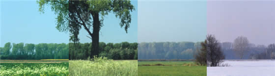
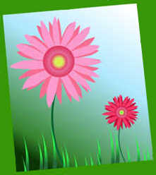
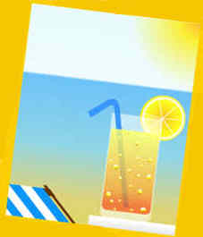
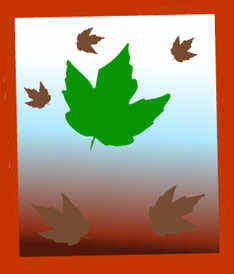
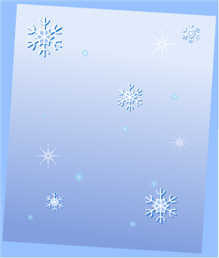

The Seasons
The Seasons are the natural divisions of the year.
In many countries the Seasons are:
| Spring | Summer | Autumn | Winter |
|  | |||
But some countries experience different seasons such as Dry and Wet in the tropics.
Every season is wonderful because the weather is so different!
|  | In Spring everything starts growing and there are many green leaves around | |
|  | Summer is hot and it is nice to go to the beach or the lake | |
|  | In Fall (which is also called Autumn) it gets cooler, the leaves fall off the trees, and the colors are amazing | |
|  | Winter is cold and fresh, and we can enjoy winter activities |
And then spring starts again!
It is nice to love every season, because each one has its own feeling and joy that makes it special.
Start and End
When each season begins and ends is not the same everywhere!
Some countries choose different dates, or even have different seasons, but in the USA:
- Spring begins at the spring equinox (equinox is when day and night have the same length)
- Summer begins at summer solstice (the longest daytime of the year)
- Autumn begins at the autumnal equinox (day and night the same length again)
- Winter begins at winter solstice (the shortest daytime of the year)
Meteorologists (people who study the weather) use a simpler system of whole months like this:
| Northern Hemisphere |
Month | Southern Hemisphere |
|---|---|---|
| Winter | December | Summer |
| January | ||
| February | ||
| Spring | March | Autumn |
| April | ||
| May | ||
| Summer | June | Winter |
| July | ||
| August | ||
| Autumn | September | Spring |
| October | ||
| November |
Why Does it Get Hotter and Colder?
Because the Earth is tilted in relation to the Sun!
At some time of the year your place will get more sun (the days are longer and the nights shorter) ... this gradually warms up everything around you.
But later in the year the days get shorter (and the nights get longer) and so everything cools down.
This animation shows you why:
* Equinox and Solstice
Equinox: The time of the year when day and night are each 12 hours long and the Sun is at the midpoint of the sky.
Equinox happens around March 21 and around September 21.
Solstice: When the Earth is the most tilted away, or towards, the Sun.
The days when this happens are called:
- Summer solstice (the longest day of the year)
- Winter solstice (the shortest day of the year)
Solstice happens around June 21 and around December 21.